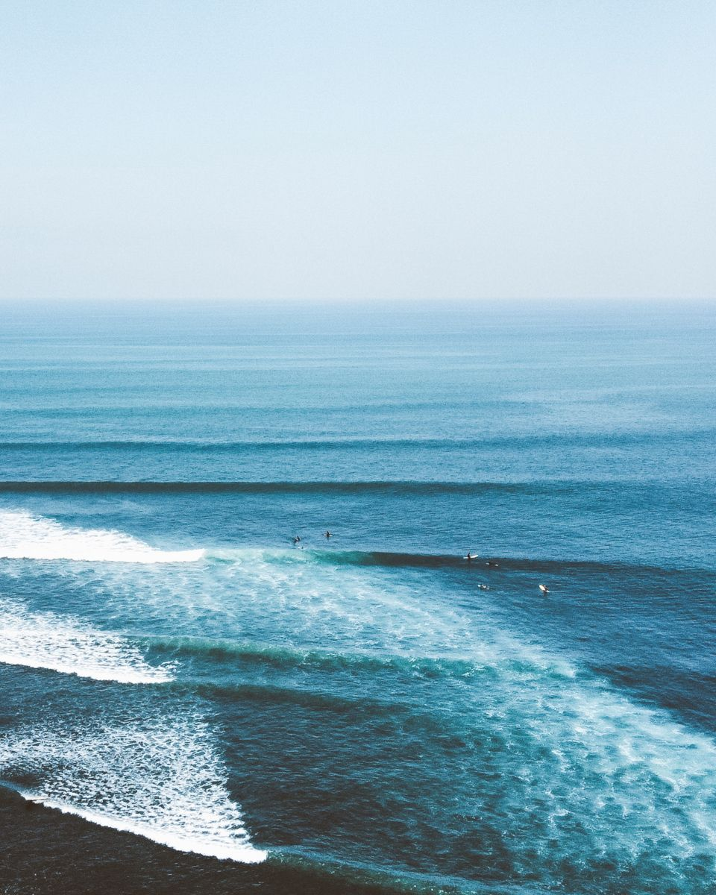
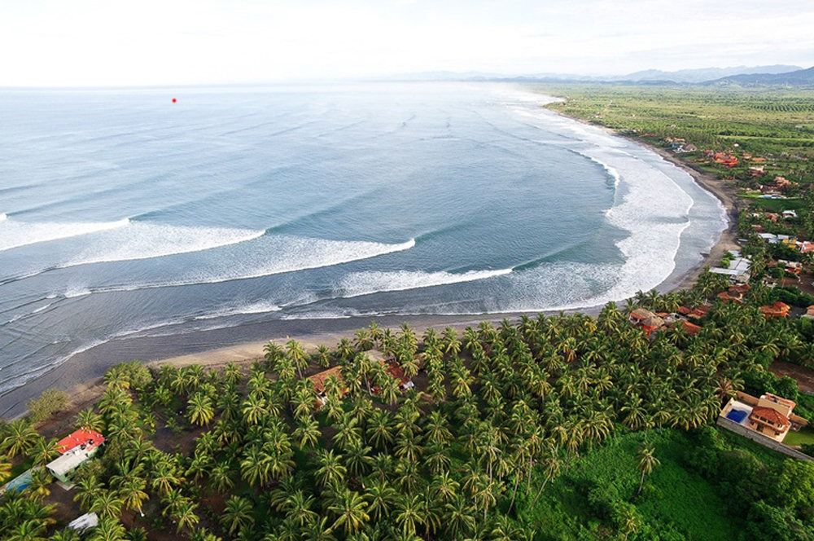
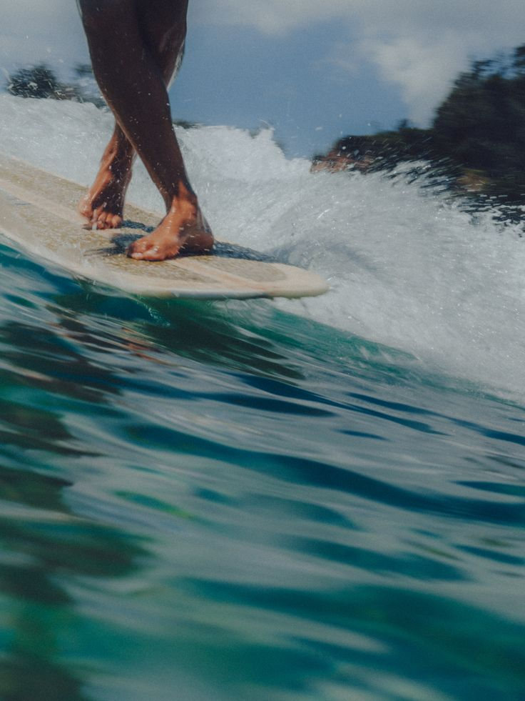
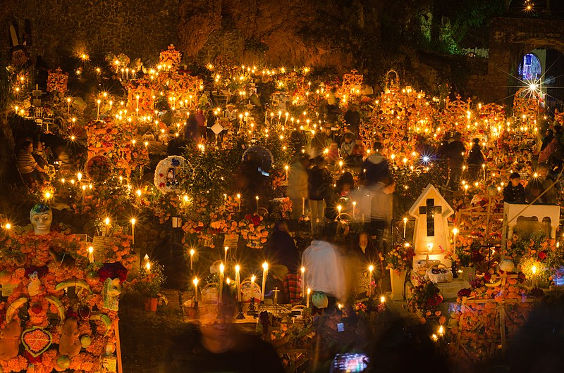
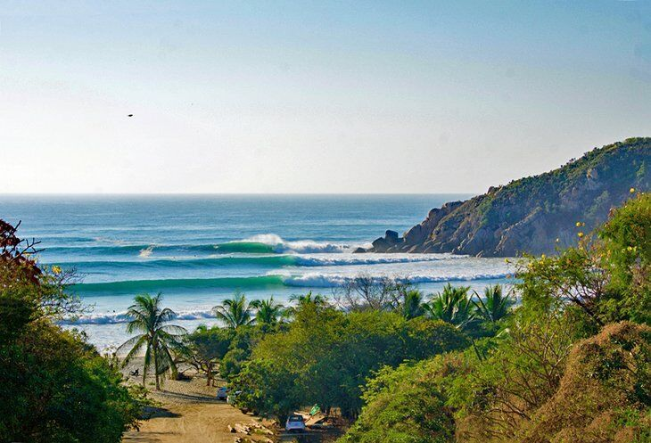

Мы нашли скрытую жемчужину тихоокеанского побережья. Это место, где Океан рождает одну из самых длинных левых волн на планете. Она мягкая, предсказуемая и кажется бесконечной.
Здесь вы перестаете бороться и начинаете чувствовать. Низкий порог входа позволяет расслабиться и ловить волны одну за другой, оттачивая грацию и чистоту скольжения.
Подать заявку на трип

Наш дом на время трипа — аутентичные хижины премиального уровня прямо на берегу. Здесь нет толп, только звук прибоя и закаты, которые невозможно забыть.
Дни проходят в ритме Океана: рассветные сессии, разборы видео с Ильей, мексиканская кухня и полная приватность. Это время, чтобы выдохнуть и вернуться к себе.

В финале мы совершим резкий переход в сердце Мексики. Оахака в эти дни превращается в нечто внеземное. Это не туристический аттракцион, а глубокая древняя традиция.
Тысячи свечей, алтари, утопающие в цветах, и ночные шествия. Мы увидим эту магию изнутри, там, где она достигает своего апогея.


Неделя интенсивного серфинга на "машине для лонгборда" с ежедневным коучингом и видео-анализом. 3 дня глубокого погружения в культуру Оахаки.
Идеально для прогрессирующих серферов. Если вы уже ловите волну и едете вдоль стенки — этот трип даст вам максимальный качественный скачок в стиле.
Проживание в лучших локациях, всё перемещение по стране, работа Ильи как наставника и проводника, съемка контента.